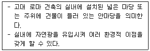
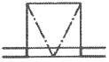
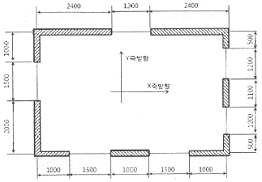
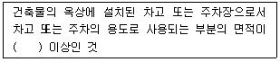
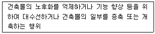
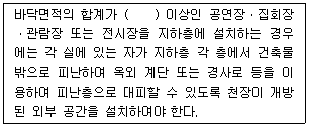

실내건축기사 (2022-04-24 기출문제)
1과목: 실내디자인계획
1. 상점의 디스플레이 기법으로서 VMD(Visual merchandising)의 구성요소에 속하지 않는 것은?
- IP(Item Presentation)
- VP(Visual Presentation)
- SP(Special Presentation)
- PP(Point of sale Presentation)
(정답률: 59%)

2. 대칭적 균형에 대한 설명으로 옳지 않은 것은?
- 가장 완전한 균형의 상태이다.
- 공간에 질서를 주기가 용이하다.
- 완고하거나 여유, 변화가 없이 엄격, 경직될 수 있다.
- 풍부한 개성을 표현할 수 있어 능동의 균형이라고도 한다.
(정답률: 90%)
3. 사무소 건축의 실단위계획 중 개실시스템에 관한 설명으로 옳은 것은?
- 공용의 커뮤니티 형성이 쉽다.
- 독립성과 쾌적감의 이점이 있다.
- 전면적을 유용하게 이용할 수 있다.
- 칸막이벽이 없어 공사비가 저렴하다.
(정답률: 50%)
4. 디자인 요소 중 점에 관한 설명으로 옳지 않은 것은?
- 기하학적으로 점은 크기와 위치만 있다.
- 많은 점을 일렬로 근접시키면 선으로 지각된다.
- 공간에 한 점을 두면 구심점으로서 집중효과가 생긴다.
- 같은 크기의 점이라도 놓이는 공간의 위치와 크기에 따라 각각 다르게 지각된다.
(정답률: 73%)
5. "Less is More"와 "Universal Space(보편적 공간)의 개념을 주장한 건축가는?
- 르 꼬르뷔지에
- 루이스 설리반
- 미스 반 데어 로에
- 프랭크 로이드 라이트
(정답률: 25%)
6. 건축제도의 글자 및 치수에 관한 설명으로 옳지 않은 것은?
- 숫자는 아라비아 숫자를 원칙으로 한다.
- 문장은 왼쪽에서부터 가로쓰기를 원칙으로 한다.
- 치수 기입은 치수선 중앙 윗부분에 기입하는 것이 원칙이다.
- 글자체는 수직 또는 15° 경사의 명조체로 쓰는 것을 원칙으로 한다.
(정답률: 73%)
7. 주방 작업대의 배치유형 중 ㄷ자형에 관한 설명으로 옳은 것은?
- 인접한 세 벽면에 작업대를 붙여 배치한 형태이다.
- 두 벽면을 따라 작업이 전개되는 전통적인 형태이다.
- 좁은 면적 이용에 효과적이므로 소규모 부엌에 주로 이용된다.
- 작업동선이 길고 조리면적은 좁지만 다수의 인원이 함께 작업할 수 있다.
(정답률: 37%)
8. 실내디자인의 계획조건을 외부적 조건과 내부적 조건으로 구분할 경우, 다음 중 외부적 조건에 속하지 않는 것은?
- 입지적 조건
- 경제적 조건
- 건축적 조건
- 설비적 조건
(정답률: 28%)
9. 실내공간 구성요소 중 벽(Wall)에 관한 설명으로 옳지 않은 것은?
- 시각적 대상물이 되거나 공간에 초점적 요소가 되기도 한다.
- 가구, 조명 등 실내에 놓여지는 설치물에 대해 배경적 요소가 되기도 한다.
- 벽은 공간을 에워싸는 수직적 요소로 수평방향을 차단하여 공간을 형성한다.
- 다른 요소들이 시대와 양식에 의한 변화가 현저한데 비해 벽은 매우 고정적이다.
(정답률: 59%)
10. 상업공간의 설계 시 고려되는 고객의 구매심리(AIDMA)에 속하지 않는 것은?
- Attention
- Interest
- Design
- Memory
(정답률: 28%)
11. 블라인드(blind)에 관한 설명으로 옳지 않은 것은?
- 롤 블라인드는 쉐이드라고도 한다.
- 베네이산 블라인드는 수평형 블라인드이다.
- 로만 블라인드는 날개의 각도로 채광량을 조절한다.
- 베네시안 블라인드는 날개 사이에 먼지가 쌓이기 쉽다.
(정답률: 67%)
12. 설치위치에 따른 창의 종류에 관한 설명으로 옳지 않은 것은?
- 편측창은 실 전체의 조도분포가 비교적 균일하지 못하다는 단점이 있다.
- 천장은 같은 면적의 측창보다 광향이 많으며 조도분포도 비교적 균일하다.
- 고창은 천장면 가까이에 높게 위치한 창으로 주로 환기를 목적으로 설치된다.
- 정측창은 직사광선의 실내 유입이 많아 미술관, 박물관에서는 사용이 곤란하다.
(정답률: 28%)
13. 이질의 각 구성요소들이 전체로서 동일한 이미지를 갖게 하는 것으로, 변화와 함께 모든 조형에 대한 미의 근원이 되는 실내디자인의 구성원리는?
- 내비
- 조화
- 리듬
- 통일
(정답률: 17%)
14. 아르누보 디자인에 관한 설명으로 옳지 않은 것은?
- 정직한 디자인과 장인정신 강조
- 색감이 풍부한 일본 예술의 영향
- 지역의 문화적 전통을 디자인에서 배제
- 바로크의 조형적 형태와 로코코의 비대칭원리 적용
(정답률: 19%)
15. 현장감을 가장 실감나게 표현하는 방법으로 하나의 사실 또는 주제의 시간상황을 일정한 시간에 고정시켜 연출하는 전시공간의 특수 전시기법은?
- 디오라마 전시
- 파노라마 전시
- 아일랜드 전시
- 하모니카 전시
(정답률: 19%)
16. 사무소 건축과 관련하여 다음 설명에 알맞은 용어는?

- 코어
- 바실리카
- 아트리움
- 오피스 랜드스케이프
(정답률: 64%)
17. 단독주택의 현관에 관한 설명으로 옳지 않은 것은?
- 복도나 계단실 같은 연결 통로에 근접시켜 배치한다.
- 거실이나 침실의 내부와 직접 접하여 연결되도록 배치한다.
- 현관의 위치는 도로와의 관계, 대지의 형태 등에 의해 결정된다.
- 바닥 마감재로는 내수성이 강한 석재, 타일, 인조석 등이 바람직하다.
(정답률: 70%)
18. 뭘러-리어 도형과 관련된 착시의 종류는?
- 방향의 착시
- 길이의 착시
- 다의도형 착시
- 위치에 의한 착시
(정답률: 25%)
19. 주택의 부엌가구 배치에 관한 설명으로 옳지 않은 것은?
- ㄷ자형의 작업대의 통로폭은 1200~1500mm이 적당하다.
- 작업면이 넓어 작업효율이 가장 좋은 작업대의 배치는 ㄴ자형 배치이다.
- 냉장고, 개수대, 가열대를 연결하는 작업삼각형의 각 변의 합은 6600mm를 넘지 않도록 한다.
- 작업대는 작업순서에 따라 준비대, 개수대, 조리대, 가열대, 배선대의 순으로 배열하는 것이 효율적이다.
(정답률: 60%)
20. 다음의 건축제도 평면표시기호 중 미들창을 나타내는 것은?

(정답률: 0%)
2과목: 실내디자인 색채 및 사용자 행태분석
21. 문ㆍ스펜서(MoonㆍSpencer)의 색채조화론에서 조화가 되는 색의 관계에 해당되지 않는 것은?
- 통일조화
- 대비조화
- 동일조화
- 유사조화
(정답률: 40%)
22. 색의 명시성에 주요인이 되는 것은?
- 연상의 차이
- 색상의 차이
- 채도의 차이
- 명도의 차이
(정답률: 46%)
23. 환경 색채디자인을 진행하기 위한 과정이 순서대로 나열된 것은?
- 색채 설계→입지 조건 조사 분석→환경 색채 조사 분석→색채결정 및 시공
- 환경 색채 조사 분석→색채 설계→입지 조건 조사 분석→색채결정 및 시공
- 입지 조건 조사 분석→색채 설계→환경 색채 조사 분석→색채결정 및 시공
- 입지 조건 조사 분석→환경 색채 조사 분석→색체 설계→색채결정 및 시공
(정답률: 46%)
24. 같은 형태(形態), 같은 면적에서 그 크기가 가장 크게 보이는 색은? (단, 그 색이 동일한 배경색 위에 있을 때)
- 고명도의 청색
- 고명도의 녹색
- 고명도의 황색
- 고명도의 자색
(정답률: 28%)
25. 먼셀 기호 5YR 7/2의 의미는?
- 색상은 주황의 중심색, 채도 7, 명도 2
- 색상은 빨간 기미를 띤 노랑, 명도 7, 채도 2
- 색상은 노란 기미를 띤 빨강, 명도 2, 채도 7
- 색상은 주황의 중심색, 명도 7, 채도 2
(정답률: 46%)
26. 조명에 의하여 물체의 색을 결정하는 광원의 성질은?
- 조명성
- 기능성
- 연색성
- 조색성
(정답률: 28%)
27. 다음 중 두 색료를 혼합하여 무채색이 되는 것은?
- 검정 + 보라
- 주황 + 노랑
- 회색 + 초록
- 청록 + 빨강
(정답률: 34%)
28. 정확한 색채를 실현하기 위한 컬러 매니지먼트 시스템(CMS)의 필요조건으로 옳은 것은?
- 컬러 매니지먼트 시스템은 복잡해서 전문가만 이용할 수 있도록 해야 한다.
- 처리속도는 중요하지 않다.
- 컬러로 된 그래픽의 작성이나 화상의 준비에 각종 프로그램과의 호환성을 필요로 한다.
- 컬러 매니지먼트에 필요한 데이터를 사용자 자신이 입력할 수는 없다.
(정답률: 67%)
29. 색채계획 과정에서 디자인에 적용하기 위하여 컬러 메뉴얼(color manual)을 작성하는데 가장 필요한 능력은?
- 색채조색 능력
- 색채구성 능력
- 컬러이미지의 계획 능력
- 아트디렉션의 능력
(정답률: 0%)
30. 공공건축공간(공장, 학교, 병원 등)의 색채환경을 위한 색채조절 시 고려해야 할 사항으로 거리가 먼 것은?
- 능률성
- 안전성
- 쾌적성
- 내구성
(정답률: 17%)
31. 의자 및 소파에 관한 설명으로 옳지 않은 것은?
- 스툴은 등받이와 팔걸이가 없는 형태의 보조의자이다.
- 체스터필드는 사용상 안락성이 매우 크고 비교적 크기가 크다.
- 풀업 체어는 필요에 따라 이동시켜 사용할 수 있는 간이 의자이다.
- 세티는 고대 로마시대에 음식물을 먹거나 잠을 자기 위해 사용했던 긴 의자이다.
(정답률: 40%)
32. 특정한 사용목적이나 많은 물품을 수납하기 위해 건축화된 가구를 의미하는 것은?
- 유닛가구
- 모듈러가구
- 붙박이가구
- 수납용가구
(정답률: 17%)
33. 인간의 눈 구조 중 망막의 감각세포에서 모양과 색을 인식할 수 있는 것은?
- 홍채
- 초자체
- 원추세포
- 간상세포
(정답률: 37%)
34. 인간-기계시스템(man - machine system)을 수동, 자동, 기계화체계로 분류할 때 기계화 체계의 예시로 적합한 것은?
- 자동교환기
- 자동차의 운전
- 컴퓨터공정제어
- 장인과 공구의 사용
(정답률: 19%)
35. 근육 운동 시작 직후 혐기성 대사에 의하여 공급되어 소비되는 에너지원이 아닌 것은?
- 지방
- 글리코겐
- 크레아틴 인산(CP)
- 아데노신 삼인산(ATP)
(정답률: 0%)
36. 의자 좌면의 너비를 결정하는데 가장 적합한 규격은?
- 사용자의 평균 엉덩이 너비에 맞도록 규격을 정한다.
- 사용자의 중위수(median) 엉덩이 너비에 맞도록 규격을 정한다.
- 사용자의 5퍼센타일(percentile) 엉덩이 너비에 맞도록 규격을 정한다.
- 사용자의 95퍼센타일(percentile) 엉덩이 너비에 맞도록 규격을 정한다.
(정답률: 10%)
37. 근수축의 종류 중 증추신경으로부터 오는 흥분충동을 받을 때 항상 약한 수축상태를 지속하고 있는 것은?
- 연축(twitch)
- 긴장(tones)
- 강축(tetanus)
- 강직(rigor)
(정답률: 37%)
38. 신체 동작의 유형 중 굴곡(flexion)에 해당하는 것은?
- 팔꿈치 굽히기
- 굽힌 팔꿈치 펴기
- 다리를 옆으로 들기
- 수평으로 편 팔을 수직으로 내리기
(정답률: 10%)
39. 인간공학적 효과를 평가하는 기준과 가장 거리가 먼 것은?
- 체계의 상징성
- 훈련비용의 절감
- 사용편의성의 향상
- 사고나 오용으로부터의 손실 감소
(정답률: 0%)
40. 정신적 피로도를 측정할 수 있는 방법으로 가장 거리가 먼 것은?
- 대뇌피질활동 측정
- 호흡순환기능 측정
- 근전도(EMF) 측정
- 점멸융합주파수(Flicker) 측정
(정답률: 46%)
3과목: 실내디자인 시공 및 재료
41. 다음 석재 중 구조용으로 가장 적합하지 않은 것은?
- 사문암
- 화강암
- 안산암
- 사암
(정답률: 10%)
42. 금속제품에 관한 설명으로 옳지 않은 것은?
- 스테인리스 강판은 내식석 및 내마모성이 우수하고 강도가 높을 뿐만 아니라 장식적으로도 광택이 미려하다.
- 메탈폼은 금속재의 콘크리트용 거푸집으로서 치장 콘크리트 등에 사용된다.
- 조이너는 벽, 기둥 등의 모서리 부분에 미장바름을 보호하기 위하여 묻어 봍인 것으로 모서리쇠라고도 한다.
- 꺽쇠는 강봉 토막의 양 끝을 뾰족하게 하고, ㄷ자형으로 구부려 2개의 부재를 잇거나 엇갈리게 고정시킬 때 사용된다.
(정답률: 19%)
43. 목구조의 부재특성에 관한 설명으로 옳지 않은 것은?
- 가공 및 보수가 용이하며, 공사를 신속히 할 수 있다.
- 천연재료이므로 옹이, 엇결 등의 결점이 있다.
- 일반적으로 중량에 비해 그 허용강도가 크고, 휨에 대하여 강한 편이다.
- 인장력에 대한 저항성능은 압축력, 전단력에 대한 저항성능에 비하여 약하다.
(정답률: 34%)
44. 목재에 주입시켜 인화점을 높이는 방화제와 가장 거리가 먼 것은?
- 물 유리
- 붕산암모늄
- 인산나트륨
- 인산암모늄
(정답률: 19%)
45. 타일공사의 바탕처리에 관한 설명으로 옳지 않은 것은?
- 타일을 붙이기 전에 바탕의 들뜸, 균열 등을 검사하여 불량 부분은 보수한다.
- 여름에 외장타일을 붙일 경우에는 하루 전에 바탕면에 물을 적시는 행위를 금하도록 한다.
- 타일붙임 바탕에는 뿜칠 또는 솔을 사용하여 물을 골고루 뿌린다.
- 타일을 붙이기 전에 불순물을 제거한다.
(정답률: 37%)
46. 원가 절감을 목적으로 공사계약 후 당해 공사의 현장 여건 및 사전조사 등을 분석한 이후 공사 수행을 위하여 세부적으로 작성하는 예산은?
- 추경예산
- 변경예산
- 실행예산
- 도급예산
(정답률: 10%)
47. 벽체 초벌미장에 대한 검측 내용으로 옳지 않은 것은?
- 하절기에는 초벌미장 후 살수양생을 검토한다.
- 벽체의 선형 및 평활도를 위하여 규준점을 설치한다.
- 면 잡은 후 쇠빗 등으로 가늘고 고르게 긁어준다.
- 신속한 건조를 위하여 통풍이 잘 되도록 조치한다.
(정답률: 0%)
48. 시멘트의 발열량을 저감시킬 목적으로 제조한 시멘트로 수축이 작고 화학저항성이 크며 주로 매스콘크리트용으로 사용되는 것은?
- 중용열포틀랜드시멘트
- 조강포틀랜드시멘트
- 백색포틀랜드시멘트
- 팽창시멘트
(정답률: 40%)
49. 실내건축공사 공정별 내역서에서 각 품목에 따라 확인할 수 있는 정보로 옳지 않은 것은?
- 품명
- 규격
- 제조일자
- 단가
(정답률: 50%)
50. 타일공사의 동시줄눈붙이기 공법에 관한 설명으로 옳지 않은 것은? (단, KCS 기준)
- 붙임 모르타르를 바탕면에 5mm~8mm로 바르고 자막대로 눌러 평탄하게 고른다.
- 1회 붙임 면적은 4.5m2 이하로 하고 붙임 시간은 60분 이내로 한다.
- 줄눈의 수정은 타일 붙임 후 15분 이내에 실시하고, 붙임 후 30분 이상이 경과했을 때에는 그 부분의 모르타르를 제거하여 다시 붙인다.
- 타일의 줄눈 부위에 올라온 붙임 모르타르의 경화 정도를 보아 줄눈흙손으로 충분히 눌러 빈틈이 생기지 않도록 한다.
(정답률: 28%)
51. 다음 그림과 같은 보강블록조의 평면도에서 x축방향의 벽량을 구하면? (단, 벽체두께는 150mm이며, 그림의 모든 단위는 mm임)

- 23.9cm/m2
- 28.9cm/m2
- 31.9cm/m2
- 34.9cm/m2
(정답률: 0%)
52. 점토제품의 품질에 관한 설명으로 옳지 않은 것은?
- 점토소성벽돌 표면의 은회색 그라우트는 소성이 불충분할 때 발생한다.
- 포장도로용 벽돌이나 타일은 내마모성의 보유가 매우 중요하다.
- 점토 벽돌의 품질은 압축강도, 흡수율 등으로 평가할 수 있다.
- 화학적 안정성은 고온에서 소성한 제품이 유리하다.
(정답률: 17%)
53. 표면건조포화상태의 잔골재 500g을 건조시켜 기건상태에서 측정한 결과 460g, 절대건조상태에서 측정한 결과 440g 이었다. 잔골재의 흡수율은?
- 8%
- 8.7%
- 12%
- 13.6%
(정답률: 9%)
54. 2장 이상의 판유리 등을 나란히 넣고, 그 틈새에 대기압에 가까운 압력의 건조한 공기를 채우고 그 주변을 밀봉ㆍ봉착한 것은?
- 열선흡수유리
- 배강도 유리
- 강화유리
- 복층유리
(정답률: 28%)
55. 미장재료 중 고온소성의 무수석고를 특별한 화학처리 한 것으로 킨즈시멘트라고도 불리우는 것은?
- 순석고 플라스터
- 혼합석고 플라스터
- 보드용 석고 플라스터
- 경석고 플라스터
(정답률: 59%)
56. 안전관리 총괄책임자의 직무에 해당하지 않는 것은?
- 작업 진행상황을 관찰하고 세부 기술에 관한 지도 및 조언을 한다.
- 안전관리계획서의 작성 제출 및 안전관리를 총괄한다.
- 안전관리 관계자의 직무를 감독한다.
- 안전관리비의 편성과 집행 내용을 확인한다.
(정답률: 46%)
57. 표준시방서(KCS)에 따른 블라인드의 종류에 해당되지 않는 것은?
- 가로 당김 블라인드
- 세로 당김 블라인드
- 두루마리 블라인드
- 베네치안 블라인드
(정답률: 0%)
58. 목재바탕의 무늬를 돋보이게 할 수 있는 도료는?
- 클리어래커
- 에나멜페인트
- 수성페인트
- 유성페인트
(정답률: 37%)
59. 방사선 차단용으로 사용되는 시멘트 모르타르로 옳은 것은?
- 질석 모르타르
- 아스팔트 모르타르
- 바라이트 모르타르
- 활석면 모르타르
(정답률: 19%)
60. 건축용으로 판재지붕에 많이 사용되는 금속재는?
- 철
- 동
- 주석
- 니켈
(정답률: 10%)
4과목: 실내디자인환경
61. 옥내소화전설비용 수조에 관한 설명으로 옳지 않은 것은?
- 수조의 내측에 수위계를 설치할 것
- 수조의 밑 부분에는 청소용 배수밸브 또는 배수관을 설치할 것
- 수조는 동결방지조치를 하거나 동결의 우려가 없는 장소에 설치할 것
- 수조의 상단이 바닥보다 높은 때에는 수조의 외측에 고정식 사다리를 설치할 것
(정답률: 19%)
62. 실내 조도가 옥외 조도의 몇 %에 해당하는가를 나타내는 값은?
- 주광률
- 보수율
- 반사율
- 조명률
(정답률: 50%)
63. 다음 중 건축물의 소음대책과 가장 거리가 먼 것은? (단, 소음원이 외부에 있는 경우)
- 창문의 밀폐도를 높인다.
- 실내의 흡음률을 줄인다.
- 벽체의 중량을 크게 한다.
- 소음원의 음원세기를 줄인다.
(정답률: 30%)
64. 점광원으로부터 수조면의 거리가 4배로 증가할 경우 조도는 어떻게 변화하는가?
- 2배로 증가한다.
- 4배로 증가한다.
- 1/4로 감소한다.
- 1/16로 감소한다.
(정답률: 10%)
65. 급탕배관의 설계 및 시공상의 주의점으로 옳지 않은 것은?
- 중앙식 급탕설비는 원칙적으로 강제순환방식으로 한다.
- 수시로 원하는 온도의 탕을 얻을 수 있도록 단관식으로 한다.
- 관의 신축을 고려하여 건물의 벽관통부분의 배관에는 슬리브를 설치한다.
- 순환식 배관에서 탕의 순환을 방해하는 공기가 정체하지 않도록 수평관에는 일정한 구배를 둔다.
(정답률: 19%)
66. 복사난방에 관한 설명으로 옳은 것은?
- 천장이 높은 방의 난방은 불가능하다.
- 실내의 쾌감도가 다른 방식에 비하여 가장 낮다.
- 열용량이 크기 때문에 방열량 조절에 시간이 걸린다.
- 오기 침입이 있는 곳에서는 난방감을 얻을 수 없다.
(정답률: 67%)
67. 다중이용시설 중 실내주차장의 경우, 이산화탄소의 실내공기질 유지기준으로 옳은 것은?
- 100ppm 이하
- 500ppm 이하
- 1000ppm 이하
- 2000ppm 이하
(정답률: 37%)
68. 다음의 공기조화방식 중 전공기방식에 속하지 않는 것은?
- 단일덕트방식
- 2중덕트방식
- 팬코일유닛방식
- 멀티존유닛방식
(정답률: 37%)
69. 표면결로의 발생 방지 방법에 관한 설명으로 옳지 않은 것은?
- 단열 강화에 의해 표면온도를 상승시킨다.
- 직접가열이나 기류촉진에 의해 표면온도를 상승시킨다.
- 수증기 발생이 많은 부엌이나 화장실에 배기구나 배기팬을 설치한다.
- 높은 온도로 난방시간을 짧게 하는 것이 낮은 온도로 난방시간을 길게 하는 것보다 결로 발생 방지에 효과적이다.
(정답률: 50%)
70. 전기시설물의 감전방지, 기기손상방지, 보호계전기의 동작확보를 위해 실시하는 공사는?
- 접지공사
- 승압공사
- 전압강하공사
- 트래킹(Tracking)공사
(정답률: 10%)
71. 전기설비용 시설공간(실)에 관한 설명으로 옳지 않은 것은?
- 변전실은 부하의 중심에 설치한다.
- 발전기실은 변전실에서 멀리 떨어진 곳에 설치한다.
- 중앙감시실은 일반적으로 방재센터와 겸하도록 한다.
- 전기샤프트는 각 층에서 가능한 한 공급대상의 중심에 위치하도록 한다.
(정답률: 40%)
72. 문화 및 집회시설 중 공연장의 개별 관람실 출구의 설치에 관한 기준 내용으로 옳지 않은? (단, 개별 관람실의 바닥면적은 300m2 이상이다.)
- 관람실별 2개소 이상 설치할 것
- 각 출구의 유효너비는 1.5m 이상으로 할 것
- 관람실로부터 바깥쪽으로의 출구로 쓰이는 문은 안여닫이로 할 것
- 개별 관람실 출구의 유효너비의 합계는 개별 관람실의 바닥면적 100m2마다 0.6m의 비율로 산정한 너비 이상으로 할 것
(정답률: 55%)
73. 다음의 소방시설 중 소화설비에 속하는 것은?
- 소화기구
- 연결살수설비
- 연결송수관설비
- 자동화재탐지설비
(정답률: 17%)
74. 건축물의 바깥쪽에 설치하는 피난계단의 구조에 관한 기준 내용으로 옳지 않은 것은?
- 계단의 유효너비는 0.9m 이상으로 할 것
- 계단실에는 예비전원에 의한 조명설비를 할 것
- 계단은 내화구조로 하고 지상까지 직접 연결되도록 할 것
- 건축물의 내부에서 계단으로 통하는 출입구에는 60+방화문 또는 60분방화문을 설치할 것
(정답률: 9%)
75. 다음은 옥내소화전설비를 설치하여야 하는 특정소방대상물에 관한 기준 내용이다. ()안에 알맞은 것은?

- 100m2
- 150m2
- 180m2
- 200m2
(정답률: 17%)
76. 건축법향상 다음과 같이 정의되는 용어는?

- 재축
- 유지보수
- 리모델링
- 리노베이션
(정답률: 67%)
77. 신축 또는 리모델링하는 공동주택은 시간당 최소 몇 회 이상의 환기가 이루어질 수 있도록 자연환기설비 또는 기계환기설비를 설치해야 하는가? (단, 30세대 이상의 공동주택의경우)
- 0.3회
- 0.5회
- 0.7회
- 1.0회
(정답률: 34%)
78. 다음 중 방화에 장애가 되는 용도제한과 관련하여 같은 건축물에 함께 설치할 수 없는 것은?
- 문화 및 집회시설 중 공연장과 위락시설
- 노유자시설 중 노인복지시설과 의료시설
- 제1종 근린생활시설 중 산후조리원과 공동주택
- 노유자시설 중 아동관련시설과 판매시설 중 도매시장
(정답률: 40%)
79. 다음은 지하층과 피난층 사이의 개방공간 설치에 대한 기준 내용이다. ()안에 알맞은 것은?

- 500m2
- 1000m2
- 3000m2
- 5000m2
(정답률: 20%)
80. 각 층의 거실면적이 각각 1000m2이며 층수가 12층인 업무시설에 설치해야 하는 승용승강기의 최소 대수는? (단, 8인승 승용승강기의 경우)
- 2대
- 3대
- 4대
- 5대
(정답률: 10%)